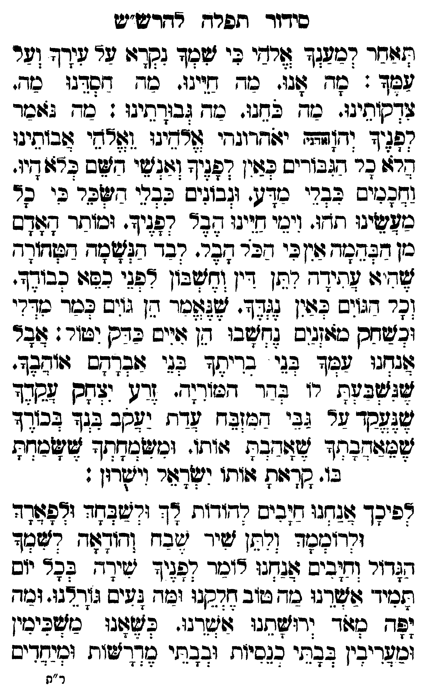

Neue Klartextfassung
תאחר למענך אלהי כי שמך נקרא על עירך ועל עמך: מה אנו. מה חיינו. מה חסדנו. מה צדקותינו. מה כחנו. מה גבורתינו: מה נאמר לפניך יהוה (אדני) אלהינו ואלהי אבותינו. הלא כל הגבורים כאין לפניך ואנשי השם כלא היו. וחכמים כבלי מדע. ונבונים כבלי השכל כי כל מעשינו תהו. וימי חיינו הבל לפניך. ומותר האדם מן הבהמה אין כי הכל הבל. לבד הנשמה הטהורה שהיא עתידה לתן דין וחשבון לפני כסא כבודך. וכל הגוים כאין נגדך. שנאמר הן גוים כמר מדלי וכשחק מאזנים נחשבו הן איים כדק יטול: אבל אנחנו עמך בני בריתך בני אברהם אוהבך. שנשבעת לו בהר המוריה. זרע יצחק עבדך שנעקד על גבי המזבח עדת יעקב בנך בכורך שמאהבתך שאהבת אותו. ומשמחתך ששמחת בו. קראת אותו ישראל וישרון: לפיכך אנחנו חיבים להודות לך ולשבחך ולפארך ולרוממך ולתן שיר שבח והודאה לשמך הגדול וחיבים אנחנו לומר לפניך שירה בכל יום תמיד אשרינו מה טוב חלקנו ומה נעים גורלנו. ומה יפה מאד ירושתנו. אשרינו כשאנו משכימין ומעריבין בבתי כנסיות ובבתי מדרשות ומיחדים
Original gegen neue OCR · Niqqud für Vergleich ausgeblendet
Original
תאחר למענך אלהיK139-001 כי שמך נקרא על עירך ועל עמך: מה אנו. מה חיינו. מה חסדנו. מה צדקותינו. מה כחנו. מה גבורתינו: מה נאמר לפניך יהוה (אדני) אלהינו ואלהי אבותינו. הלא כל הגבורים כאין לפניך ואנשי השם כלא היו. וחכמים כבלי מדע. ונבונים כבלי השכל כי כל מעשינו תהו. וימי חיינו הבל לפניך. ומותר האדם מן הבהמה אין כי הכל הבל. לבד הנשמה הטהורה שהיא עתידה לתןK139-002 דין וחשבון לפני כסא כבודך. וכל הגוים כאין נגדך. שנאמר הן גוים כמר מדלי וכשחק מאזנים נחשבו הן איים כדק יטול: אבל אנחנו עמך בני בריתך בני אברהם אוהבך. שנשבעת לו בהר המוריה. זרע יצחק עבדך שנעקד עלK139-003 גבי המזבח עדת יעקב בנך בכורך שמאהבתך שאהבת אותו. ומשמחתך ששמחת בו. קראת אותו ישראל וישרון: לפיכך אנחנו חיבים להודות לך ולשבחך ולפארך ולרוממך ולתן שיר שבח והודאה לשמך הגדול וחיבים אנחנו לומר לפניך שירה בכל יום תמיד אשרינו מה טוב חלקנו ומה נעים גורלנו. ומה יפה מאד ירושתנו. אשרינו כשאנו משכימין ומעריבין בבתי כנסיות ובבתי מדרשות ומיחדיםK139-004
OCR · fehlbar
סידוד ותפרד אחרט"ש זזזר דכיעגד רדי בי שכ ך גקדצו ער טידד וער צל"ד :. סד 6ו2ז. כד תויגו. כמך דפדגו כד. שדקותיבו. בד. 9 חבו. כד [בדתיגו . כיד. 2זזבזד קפפיך וד[זהד יזודדוגדי דיגו (לדקי שבזתיגו בדל בר זגב(דיב לציין דלוי ומיאן דצב בדז די: חנניש בברי בזדג. גבוניס בבכי דסר בי סד כוזישיגו זדו. ויבזי חייגו 27 קפגיד. (כוותך גצודש ן דבזדכזד זוK139-001 כי בר גבך קכד חשד. דשודזדד צד ז: לעיד- דתןK139-002 דין וזשבון דנ בפיו כביג-. (ה- נגזיש לצנן נגלד אצזזכ- דן ב גבך גץ ובזשחסן כזוזגיס גדזשבו דן 4זייש דס וטור : צבר זגקגו שבך בגי בדיחמץ בג' זזבדחס יוגד. צלילבלח. רו בדר דפיד(ד- זרז. יצגס קגד לכד רK139-003 גבי דב זח שדת לקב בגד לכודד ילצזודבמך צוזודבת צותו. וכישצדחך שישכדח כו. שדג:ת ז:ותו נישדצור ויילרון : רפיכך צוגגגי דזבים נדודוח דד ודשבחד ודלצזדד ונרומשד (רח] שיך ישבח [דודזח רצזצד ח(דור ומבים (:גדנז דינר גליך ישיד-. לער יזס ותכיך גוזשדבו כד בשוב דסנו וטד בשיס גזתצץגו. וכזד פר כצור גר"לתנו זוישרגו. בג' נישפיכי. ונישדיבין בב זי בגסיוח ובב.זי צאדךישוח וניחדיב ר"תK139-004